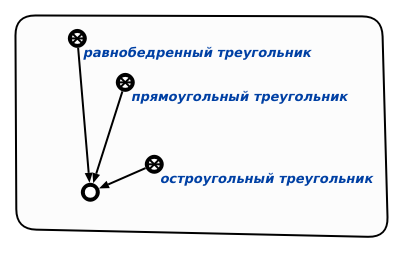
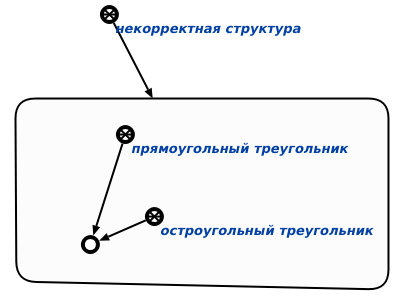

Команда проверки наличия непустого пересечения у элементов одного разбиения предназначена для поиска наличия непустых пересечений у элементов одного разбиения в рамках указанной сущности. Единственным входным аргументом команды является структура, в которой необходимо провести проверку наличия непустого пересечения у элементов одного разбиения. Входной аргумент и результат выполнения команды показан ниже:

Рис 1. Входной аргумент

Рис 2. Результат выполнения команды